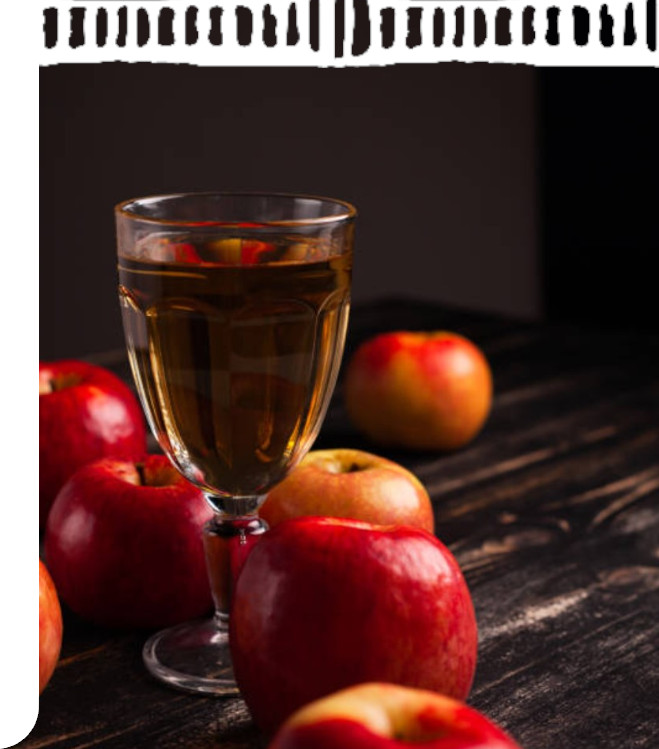

70 cl - AB - de couleur blonde et au goût fruité et vif. Il sera idéal pour le traditionnel trou normand, en cocktail ou encore en cuisine.
70 cl - AB - Un calvados équilibré avec des notes fruitées.
70 cl - Dans ce calvados vous trouverez une touche de fruité et une finition boisée.
70 cl et 35 cl - Des notes de boisé, la rondeur des pommes cuites au four pour ce très vieux calvados.
70 cl et 35 cl - une couleur ambrée et des notes franches de boisé et de caramel caractérisent ce calvados d'exception.
" Pour la fabrication de nos calvados, nous utilisons un alambic à colonne : nos cidres totalement fermentés sont distillés pour obtenir une eau de vie à 71°, qui est ensuite élevée en fûts de chêne pendant de longues années. Le calvados sera mis en bouteille à 40° minimum. "



Le goût authentique du Pays d'Auge avec ses arômes doux et fruités légèrement tanniques.
4.5% vol
Cidre de caractère, désaltérant avec sa pointe d’amertume.
5% vol
Équilibré et fruité, idéal en apéritif.
4.5% vol
Riche en bouche avec ses arômes de pommes mûres.
3% vol
" Après pressage, le moût est envoyé en cuves (5 à 12 jours). Le moût est ensuite soutiré et envoyé en tonneaux pour la 1ère fermentation effectuée grâce aux levures indigènes (1 à 3 mois). Lorsque la densité souhaitée est atteinte, le cidre est soutiré et filtré afin de contrôler la population de levures. La 2ème fermentation a lieu en bouteille toujours grâce aux levures indigènes (minimum 3 mois), c'est ce qui va apporter l'effervescence à nos cidres : c'est la prise de mousse naturelle. Il ne reste plus qu'à déguster! "


De couleur ambrée, avec des arômes de pomme juste compotée, relevé par la vivacité du Calvados.
18% d'alcool
" Assemblage de moût de pomme et de jeune calvados, notre pommeau est vieilli au minimum 18 mois en fûts de chêne. A la mise en bouteille, il titre entre 16 et 18°. Il se déguste en apéritif, en cuisine ou même en digestif. "


Le bon goût de nos vergers, fruité et doux.
0% d'alcool
fabriqué à partir de nos pommes à cidre choisies soigneusement et en partie ramassées à la main. Ses arômes sont intenses, corsés et fruités. Il est pasteurisé et mis en bouteille à la ferme. Vous avez 2 ans pour le déguster (si vous n'avez pas succombé avant!)


- Tel goût
- telle teneur d'alcool
Ce produit est en cours d'élaboration, suspens !

C’est sur la route du cidre, dans le pays d’Auge, que se situe cette ferme typique à colombage, du 17ème siècle. Nos arrière-grands-parents, René et Hélène Turmel, y travaillèrent de 1948 à 1960 et lorsqu’ils partirent à la retraite, leur fils Robert et son épouse Denise leur succédèrent. Jusque dans les années 70, l’activité est partagée entre la production laitière et cidricole. Avec la naissance de la route du cidre, la ferme se spécialise dans le domaine cidricole. Elle compte aujourd’hui 7 hectares de vergers hautes tiges, environ 600 pommiers de 20 variétés différentes, en majorité des variétés locales du Pays d’Auge. En 1995, notre grand-père Robert Turmel cède sa place à Luc Bignon, son gendre. Ce dernier engage dès 1997 la conversion en Agriculture Biologique, pratique alors peu répandue à l’époque. Pendant toute sa carrière, Luc s’est attaché à élaborer des produits de qualité tout en laissant la nature maîtresse. A partir de 2019, nous avons préparé la transmission de la ferme : chacune a suivi une formation spécialisée en production cidricole, Éloïse après des études agricoles, Estelle en reconversion d’un début de carrière dans l’industrie laitière. C’est ainsi que depuis le mois d’avril 2022, nous avons le plaisir de vous accueillir à la ferme du bout du chemin et de vous présenter nos cidres, notre pommeau, nos calvados et notre jus de pomme.

27
Avril
passé
Médaille d’Or : pour notre pommeau, dans la catégorie Pommeau + de 2 ans.
Médaille d’argent : pour notre Calvados très vieille réserve 25 ans d’âge, dans la catégorie Calvados AOC 13 ans et plus
11/12
Juillet
prochain
Rendez vous à Gonneville le Theil (50), nous y serons !
02
Juin
prochain

Petit paragraphe annoncant l'actualité en question, que s'est-il passé, que se passera-t-il, tout le monde attend ces informations exhaustives pour mettre fin au suspens insoutenable